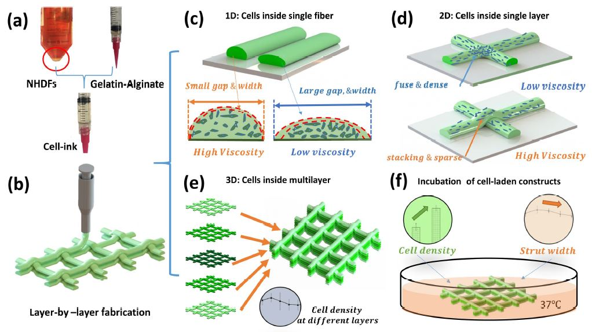
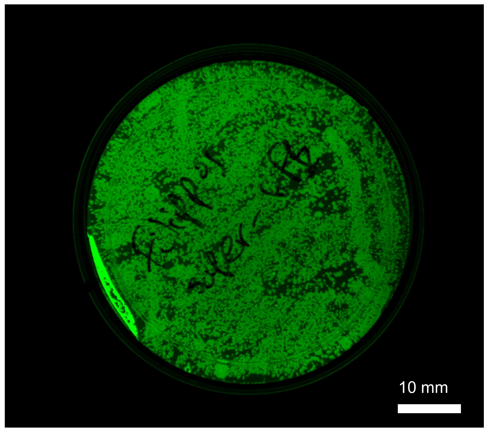
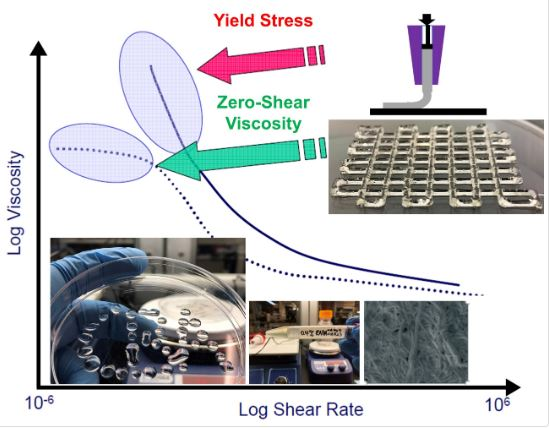
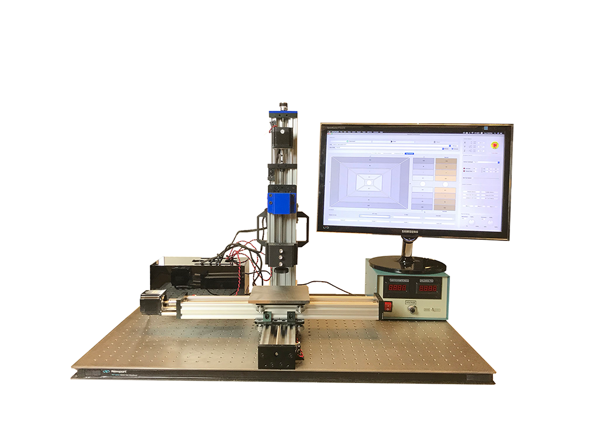
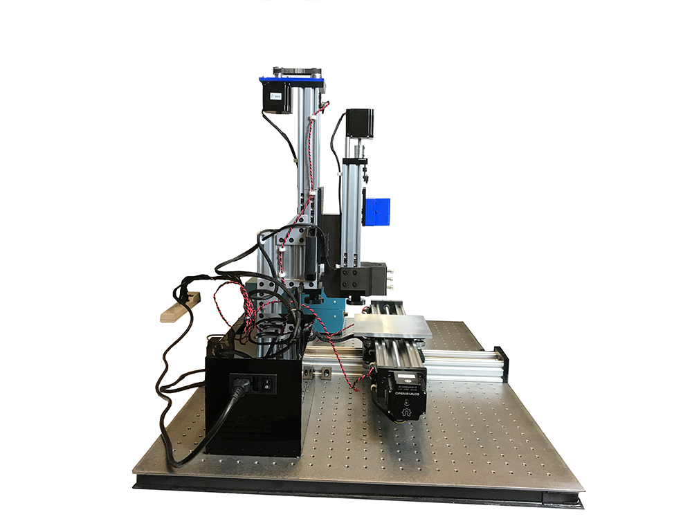
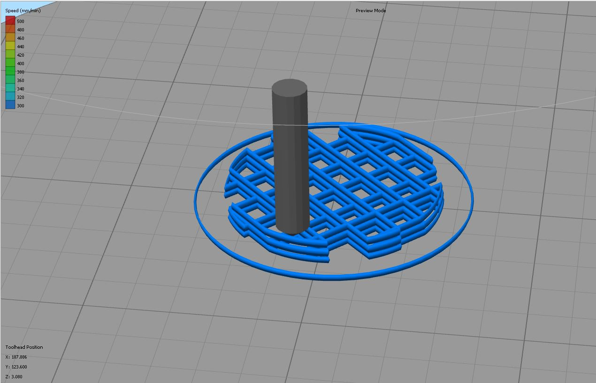

HTGAA : 3D Bio Printing & Biofabrication
Offered in 2019 , Updated 05/30/2023 Dr. Nina Tandon (Epibone) and Filippos Tourlomousis (CBA @ MIT)
Bioprinting Workflow
Task 1: Engineered Cells
For example perform a transformation protocol in order to produce Ecoli bacteria that express GFP.
Task 2: Bioink Fomrulation

We are going to use a thermoresponsive gel called Pluronic .Here the task is to learn how to optimize its rheological properties for optimum printability with and without cells:
Task 3: Printing using Direct Writing Microextrusion
After having optimized your bioink formulation, design and print whatever you want using a custom-made bioprinter. We are going to learn about bioprinting design rules. Printing 3D soft matter structures with well defined geometrical features requires a careful parametric study of the independent process parameters (extrusion rate, tranlational stage speed are the most important ones considering that you have optimized the ink's rheological properties).
 Task 4: Characterize your bioprinted construct


Opentrons Script
To be added